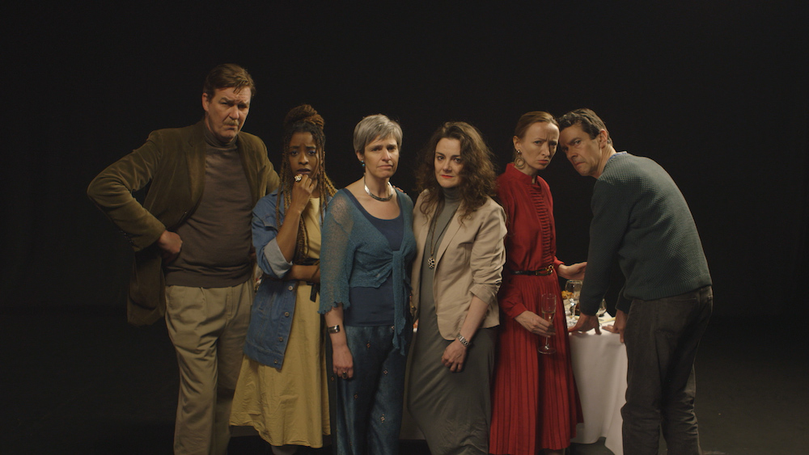
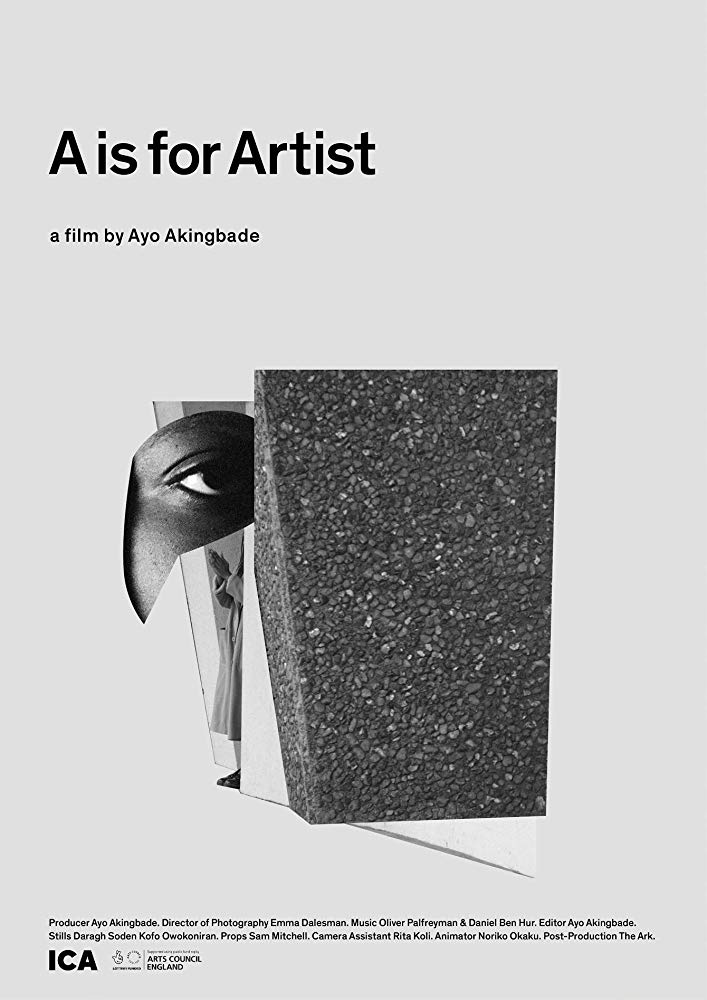
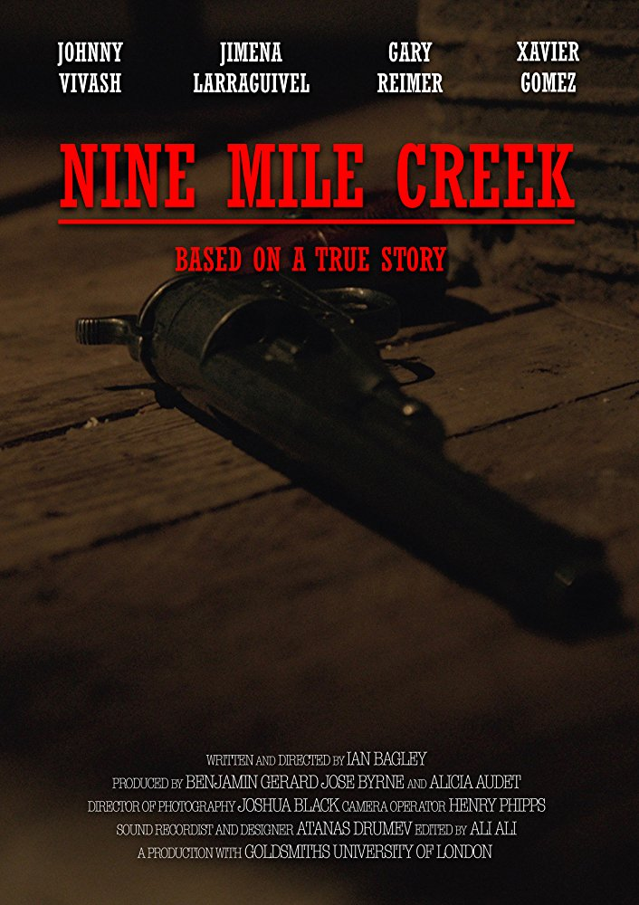
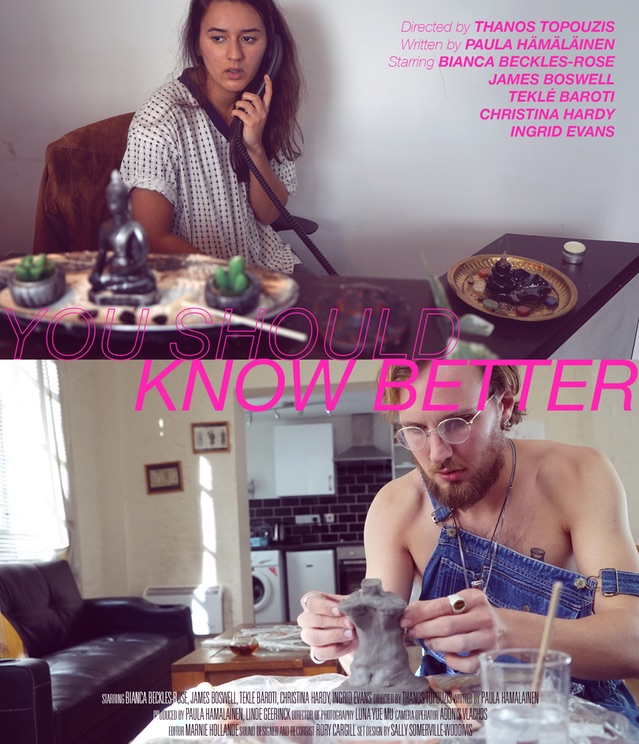
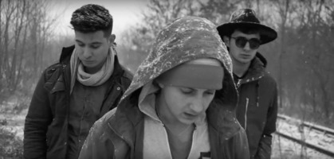
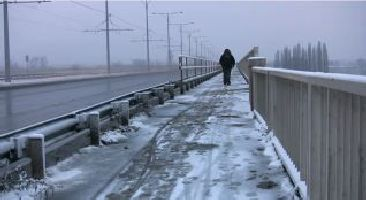

Rita Kóti
Freelance Filmmaker
See my work
My involvment in projects with a large film/tv crew.
Anat's Party

Short Movie
A is for Artist

Short Movie
21st UK International Jewish Film Festival
Promo Video
Self Esteem - Your Wife
Music Promo
Nine Mile Creek

Short Film
You Should Know Better

Short Film
ITV Insight
Member of the floorwalking team of the Love your Mac program
Channel4
Intern at the 4Creative Department
BBC
Intern at the Documentary Department
Selection of micro-budget short movies and reportages, where I had a major role in the production process.
Hibáztam (I've made a mistake)
Debut video of Hungarian rap band
Watch on Vimeo Watch on YouTube
One SIM Card Is Enough
Séance
It is always wise to relax outside for a bit if you feel down after an exhausting day
Watch on Vimeo
A képzelet ereje (The power of imagination)
Watch on YouTube
Latency

Watch on YouTube
Brexpectations
Documentary
Klapa Koznio Live Concert
Reportage with Ágnes Simándi
Watch on YouTube
Pázsitos Sétány (10 Pazsitos Way)
Watch on YouTube
Reportage with the leader of the MKKP
10:58-12:52 ): Director, Camera operatorWatch on YouTube
Héják és Galambok (Hawks and pigeons)
Watch on YouTube
Kapcsolatok (Connections)
Publications and other writings
Some of my publications, theses and tutorials I wrote
Meteo, a poszt-apokaliptikus vízió (Meteo, the Hungarian post-apocalyptic vision)
Download as PDF (Hungarian)
Nők a Viking korban (Women in Viking Age)
Download as PDF (Hungarian)
FFMpeg Tutorial
FFmpeg tutorial, written during the internship at the BBC
Link (English)
Identitás és reprezentáció a kortárs török-német filmekben (Identity and representation in contemporary Turkish-German cinema)
Dystopian Fantasy
What does a dystopia "look like"? (essay about Stanley Kubrick's Clockwork Orange)
Download (English)
Nyugat-európai kortárs diaszpóra filmek (Western-European contemporary diasporic cinema)
Download